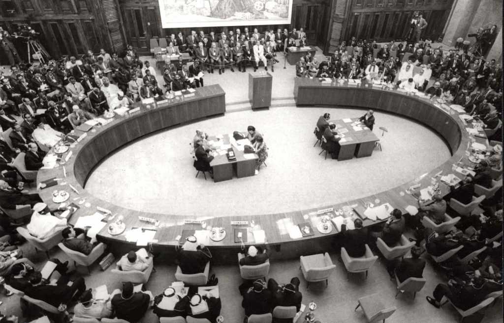
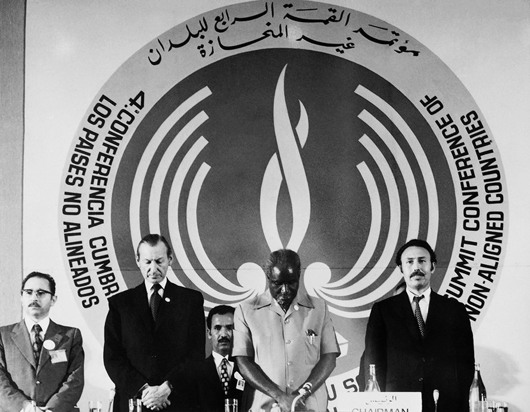
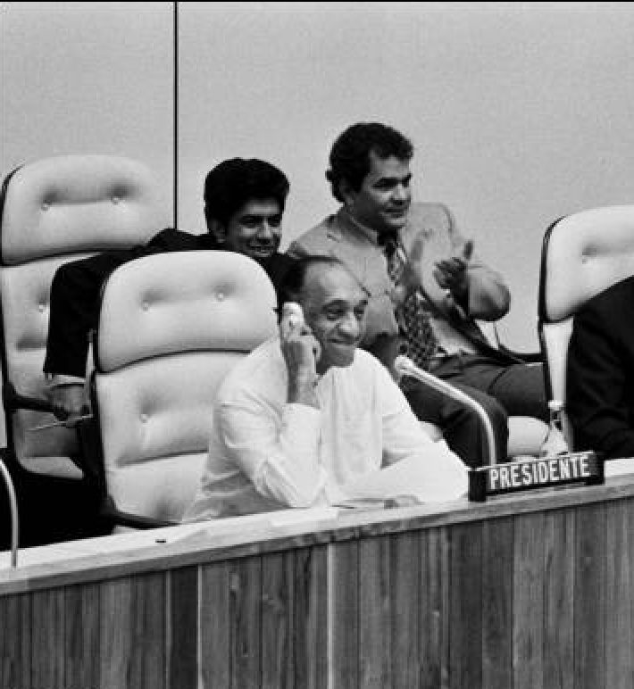
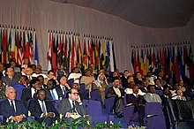
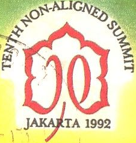
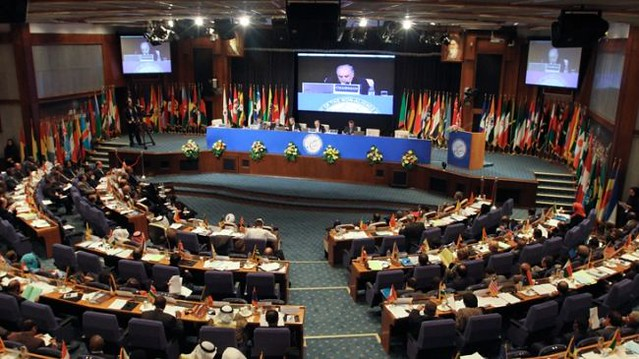
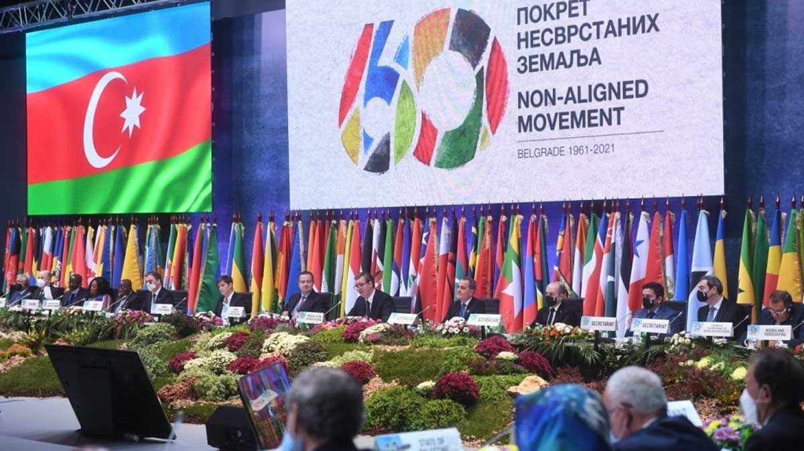

History of nam
Significant events
-

1955
Bandung Conference
29 Asian and African countries convened in Bandung, Indonesia, laying the groundwork for NAM with a focus on anti-colonialism and peaceful cooperation.
-

1961
Founding of NAM in Belgrade
NAM was officially established at the Belgrade Conference, where representatives from 25 countries defined its goals of non-alignment, anti- colonialism, and peaceful coexistence.
-

1973
Algiers Conference (4th Summit)
Emphasised economic reform and introduced the concept of a "New International Economic Order" to advocate for the interests of developing countries.
-

1979
Havana Conference (6th Summit)
Fidel Castro’s push for socialist alignment sparked debate about remaining truly “non-aligned.”, yet NAM upheld its principle of independence from major power blocs.
-

1986
Harare Conference (8th Summit)
Renewed NAM’s focus on ending apartheid in South Africa, emphasising its anti-colonial and anti-racist values.
-

1992
Jakarta Conference (10th Summit)
Post-Cold War, NAM focused on issues like globalisation, development, and environmental concerns.
-

2012
Tehran Conference (16th Summit)
Addressed disarmament, nuclear non-proliferation, and economic inequality, affirming NAM’s ongoing relevance.
-

2021
60th Anniversary
NAM celebrated its 60th anniversary in Belgrade, reflecting on its legacy and role in addressing global challenges like COVID-19, economic inequality, and climate change.